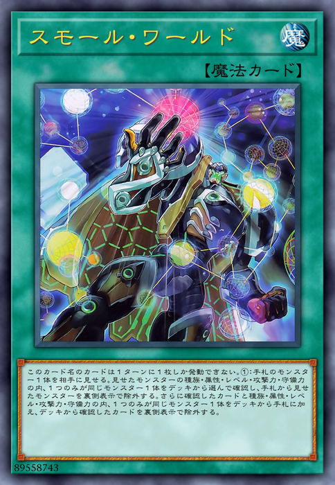
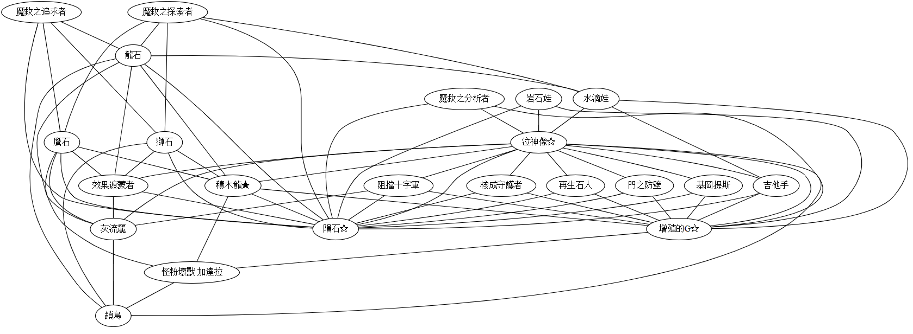
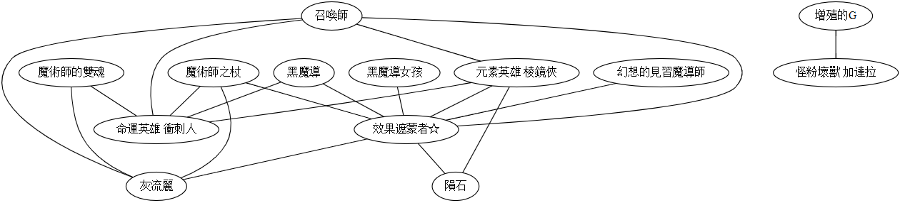
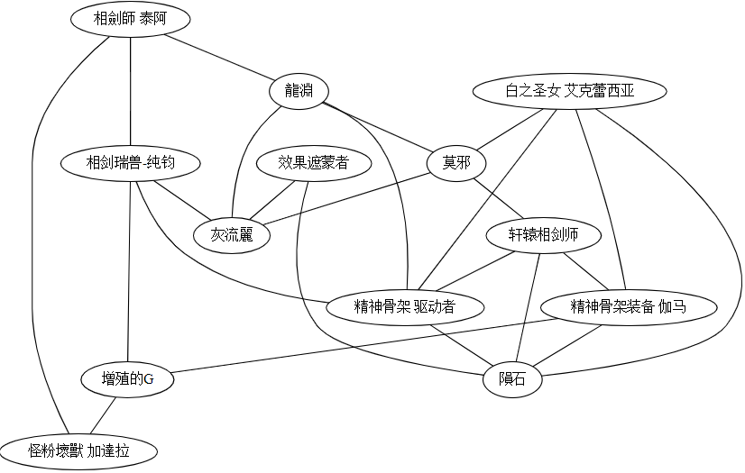

當我看到遊戲王出了小世界現象這張卡時，不禁會心一笑。

這個卡名的卡1回合只能發動1張。①：向對手展示手牌的1只怪獸。從卡組選1只與展示的怪獸的種族·屬性·等級·攻擊力·守備力之中，只有1項相同的怪獸確認，將從手牌將展示的怪獸以裏側表示除外。再從卡組將1只與確認的怪獸的種族·屬性·等級·攻擊力·守備力之中，只有1項相同的怪獸加入手牌，將從卡組確認的卡以裏側表示除外。
“六度分隔理論”認為世界上任何兩個人之間都可以通過六個中間人就可以建立起聯繫。類似的，“小世界現象”這張卡讓你能夠藉助一張中間怪獸，將手中的怪獸換成另一張怪獸。
注意到這張卡時，我正在玩“魔救·積木龍”卡組，小世界現象的出現為我檢索積木龍（一張關鍵卡）提供了一種額外的途徑。這張卡的有趣之處不僅在於關鍵卡的檢索，還在於它提供了許多有趣的可能。例如，我該如何將手中的一張廢件換成一張有用的手坑呢（例如灰流麗、增殖的G），相應檢索鏈的中間卡是哪張？在思考這個問題的過程中，你會發現小世界現象一卡帶來了種類繁多的可能檢索鏈。人工窮盡這所有的可能幾乎辦不到。
為了做這件事，我寫了一個程序來分析這個問題。 以下展示在一些典型卡組上運行程序得到的結果。

假如我們手中有A卡，想用小世界現象將其轉化為B卡，可以從圖中看看有沒有C卡能夠作為中間結點，將AB相互鏈接。例如，設A卡是灰流麗，我們想把它換成B卡積木龍。查找這張圖發現我們可以用魔救的鷹石作為中間卡（這是因為鷹石和灰流麗都是0攻，和積木龍都是岩石族）。
可以看到如泣神像、隕石、增殖的G等結點有許多邊與之連接。這樣的結點好比是卡組中的“明星”結點。許多卡都可以它們為中間卡來檢索得到。

上圖展示的是黑魔導卡組的檢索鏈。可以看到，效果遮蒙者是一個重要的明星結點；想要構建檢索增殖的G的檢索鏈很困難，因為圖中增殖的G只和壞獸相連接，形成了一個“孤島”。

最後展示一個相劍卡組的檢索鏈。如圖，該卡組沒有十分明顯的“明星結點”。卡組沒有明星結點會導致小世界現象的牌效降低，想記住一些實用的檢索鏈也變得很困難。總結
本文介紹了小世界現象這張卡，介紹了我寫的用於分析卡組檢索鏈條的小程序。 你可以在這裡試用這個程序。
總的來看，小世界現象不是一張特別強的卡——它需要里側除外一張手卡作為代價。目前的T0卡組總是會有各種各樣的檢索手段和1卡展開方法，投入小世界現象對於它們意義不大。 這張卡的存在對於缺乏關鍵卡檢索手段的娛樂卡組還是很重要的。希望Konami多出一些像小世界現象這樣，有趣、有用而且又不打破平衡的卡吧。